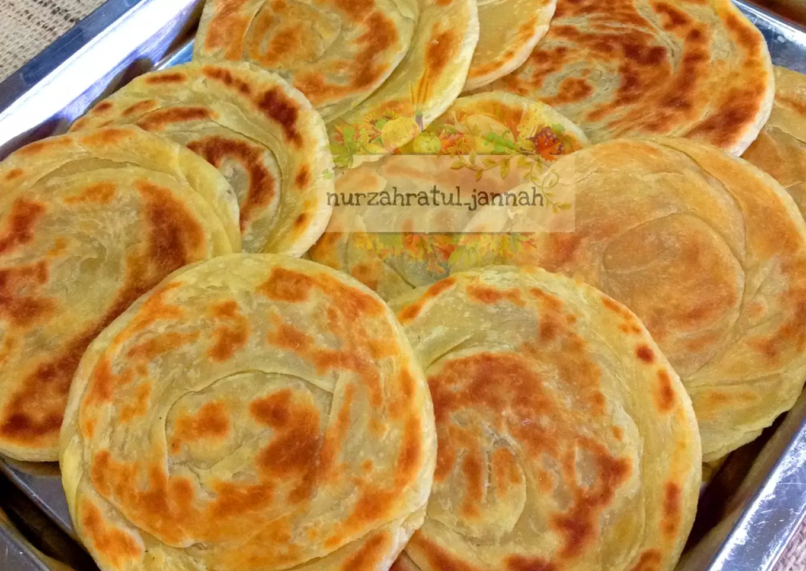
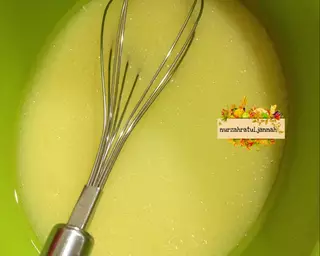
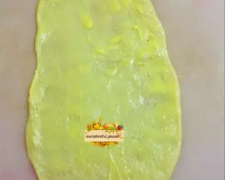
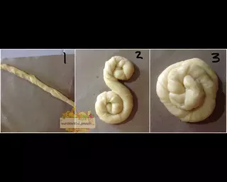
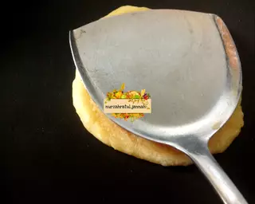
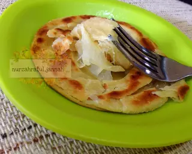
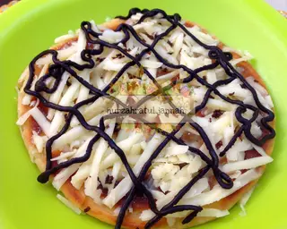

Resep Kue Maryam

Bahan-bahan :
- 250 gr tepung terigu
- 1 butir telur
- 3 sdm margarin, lelehkan
- 100 ml air hangat
- 2 sdm susu bubuk(optional)
- 1/2 sdt garam
- margarin leleh untuk olesan
- minyak untuk merendam
Langkah-langkah :
- Campur semua bahan roti jadi satu

- uleni sampai kalis jangan takut jika adonan lengket, lumuri sesekali dengan tepung, uleni terus sampai adonan kalis

- Kalisnya adonan tidak sekalis adonan roti, kira-kira seperti pada gambar dibawah ini.

- Ambil satu adonan, pipihkan hingga tipis olesi dengan margarin secara merata

- Lalu gulung perlahan sampai bentuk memanjang dan sedikit ditarik agar lebih panjang. Kemudian gulung melingkar dengan arah
berlawanan jadi seperti huruf 'S'. ketika sudah bertemu ditengah, lalu tumpuk Jadi satu

- Panaskan teflon, ambil adonan yang sudah di tumpuk jadi satu kedalam teflon, langsung pipihkan dengan cara ditekan memutar menggunakan serokan penggorengan

- Jika bagian bawah sudah sedikit mengeras, balik lalu tekan memutar lagi, balik tekan kembali hingga semua sisi berwarna kuning kecoklatan
- Jika semua sisi sudah berwarna kuning kecoklatan, angkat dan lakukan kembali pada adonan berikutnya hingga habis

- Apabila sudah matang semua, sajikan dengan topping sesuai selera.
